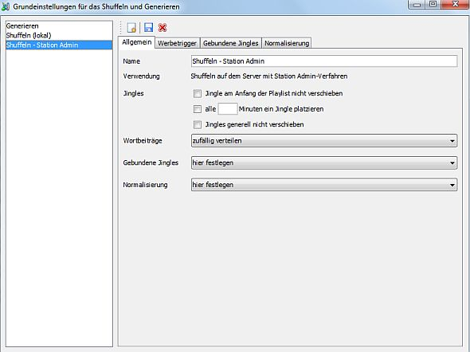
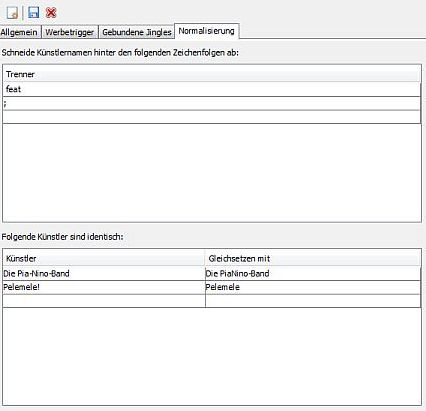
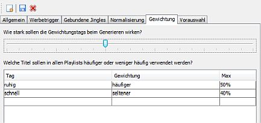
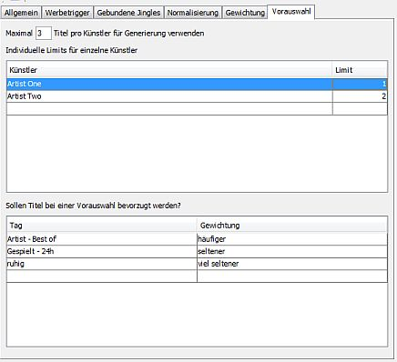

Was ist das?
Viele Einstellungen könne auf Ebene einer einzelnen Playlist konfiguriert werden. Andere Einstellungen hingegen können zwischen mehreren Playlists geteilt werden. Das ist sinnvoll wenn die Konfiguration aufwändig ist oder ein generelles Verhalten definiert werden soll das über Playlistgrenzen hinweg beibehalten werden soll. Das beinhaltet z. B. die Platzierung von Jingles oder Ad-Triggern oder die Normalisierung von Künstlernamen.
Ob Grundeinstellungen für eine Playlist verwendet werden können hängt davon ab wie die Titelreihenfolge festgelegt wird. Grundeinstellungen werden verwendet für Playlists
In den Grundeinstellungen können für alle diese Ansätze ein oder mehrere Profile angelegt werden die dann in den Playlists auswgewählt werden. Die verfügbaren Einstellungen hängen vom gewählten Profiltyp ab - für die Generierung stehen z. B. Einstellungen zur Verfügung die es für das Shuffeln auf dem Server nicht gibt.
Anlegen von Profilen
Für jeden Verwendungstyp ist standardmäßig bereits ein Profil angelegt. Darüber hinaus kannst Du bei Bedarf weitere Profile anlegen. Klicke dazu auf  und wähle aus wofür das neue Profil verwendet werden soll. Dann nimst Du die Einstellungen wie gewünscht vor und klickst auf
und wähle aus wofür das neue Profil verwendet werden soll. Dann nimst Du die Einstellungen wie gewünscht vor und klickst auf  zum Speichern.
zum Speichern.
Einstellungsmöglichkeiten innerhalb eines Profils
Umgang mit Jingles und Wortbeiträgen
Es gibt einige Konfigurationsmöglichkeiten die den Umgang mit Jingles und Wortbeiträgen steuern. Diese findest Du auf dem Reiter .
Alle in einer Playlist enthaltenen Jingles werden normalerweise beim Shuffeln oder Generieren gleichmäßig und in zufälliger Reihenfolge über die Playlist verteilt. Mit folgenden Optionen läßt sich das Verhalten ändern:
Für Wortbeiträge gibt es folgende Möglichkeiten:
Gebundene Jingles oder Wortbeiträge
Einen Sonderfall stellen Jingles oder Wortbeiträge dar die an bestimmte Titel gebunden werden sollen und entweder vor oder nach den entsprechenden Titeln platziert werden sollen. Entsprechende Regeln lassen sich über konfigurieren.
Du kannst entweder eigene Regeln für das auswählte Profil konfigurieren oder Regeln aus einem anderen Profil übernehmen. Um Regeln aus einem anderen Profile zu übernehmen wechsele auf den Reiter und wählte unter das entsprechende Profil aus. Um eigene Regeln festzulegen wähle aus.
Die Regeln für gebundene Jingles können in Gruppen organisiert werden. Für jede Gruppe kann ein Mindestabstand in Minuten konfiguriert werden. Angenommen Du hast mehrere Jingles die jeweils an bestimmte Künstler gebunden werden, möchtest aber nicht dass zwei solcher Jingles innerhalb einer halben Stunde vorkommen: Dann organisierst Du die Regeln für diese Jingles in einer Gruppe und setzt den Abstand auf 30 Minuten.
Eine Regel legt für ein einzelnes Jingle oder einen Wortbeitrag fest an welche Titel es gebunden wird. Folgende Einstellungen sind verfügbar:
Wenn Regeln für Künstler erstellt werden reicht ein Teil des Namens - d. h. eine Regel für "Foo" würde auch "Foo feat. Bar" akzeptieren. Für Alben und Künstler + Titel muss der gesamte Begriff passen - allerdings werden Groß-/Kleinschreibung sowie Leer- und Sonderzeichen ignoriert.
Wenn durch eine Regel ein gebundenes Jingle an eine Position eingefügt werde würde an der sich bereits ein Jingle befindet gibt es folgende Möglichkeiten:
Für das Shuffeln von Playlists auf dem Server gilt: Du musst die gebundenen Jingles in die Playlist einfügen da beim Shuffeln keine Tracks verwendet werden können die nicht schon in der Playlist enhalten sind. Es wird empfohlen die Playlist automatisch befüllen zu lassen.
Werbetrigger

Wenn du nichts weiter konfigurierst wird auf dem Server der Standard-Ad-Trigger zu Standardzeiten in Deine Playlist eingefügt. Möchtest Du die Zeiten selber kontrollieren, einen eigenen Trigger verwenden oder ein Jingle vor den Trigger setzen gehe in die Einstellungen zu und aktiviere .
Wähle die Zeiten aus zu denen Werbung gespielt werden soll. Die Positionen sind relativ zum Playlistanfang und wiederholen sich jede Stunde - d. h. bei 20 / 50 würde ein Trigger jeweils nach dem ersten Track platziert der 20 bzw 50 Minuten nach der vollen Stunde endet. Beachte bitte das in jeder vollen halben Stunde ein Trigger enthalten sein muß und das der Mindestabstand 20 Minuten betragen muß - sonst werden die Trigger auf dem Server verworfen.
Es wird empfohlen die Trigger nicht gegen Ende der vollen Stunde zu setzen weil sonst die Gefahr besteht dass ein lang laufender Ttiel das rechtzeitige Setzen des Triggers verhindert.
Wenn ein Jingle als Werbetrenner vor den Trigger platziert werden soll wähle unter ein Jingle aus.
Wähle unter ein Jingle das als Ad-Trigger verwendet werden soll. Normalerweise kann das Standardjingle verwendet werden. Möchtest Du dass ein bestimmtes Jingle nach der Werbung läft so verwende dieses Jingle als Ad-Trigger - es muss jedoch "START_AD_BREAK" als Artist oder Titel gesetzt sein. In dem Fall löst das Jingle die Werbung aus, nach der Werbung läuft ist dann das Jingle zu hören.
Beachte bei der Verwendung von eigenen Werbetrennern oder -triggern bitte dass nicht zwangsläufig Werbung gespielt wird. Es kann also passieren dass die Hörer nur die Jingles, aber keine Werbung hören.
Weiterhin kannst Du festlegen was passieren soll wenn an der Stelle wo ein Werbetrigger eingefügt werden soll schon ein Jingle steht:
Für das Shuffeln von Playlists auf dem Server gilt: Du musst den Ad-Trigger und gegebenenfalls den Trenner in die Playlist einfügen da beim Shuffeln keine Tracks verwendet werden können die nicht schon in der Playlist enhalten sind. Es wird empfohlen die Playlist automatisch befüllen zu lassen.
Normalisierung von Künstlernamen

Künstlernamen kommen häufiger in verschiedenen Schreibeweisen vor. Dennoch sollte verschiedene Schreibweisen beim Shuffen oder Generieren von Playlists als ein und derselbe Künstler gewertet werden um Abwechselung und die Einhaltung der GVL-Regeln zu gewährleisten.
Stammt ein Titel von mehreren Künstlern hat man häufig ein Zeichen oder ein bestimmtes Schlüsselwort an dem sich er Name aus den Titelinformationen auftrennen lässt - das kann z. B. so etwas sei wie "Artist One feat. Xyz".
Auf dem Reiter kannst Du in der oberen Tabelle festlegen welche solche Trenner konfigurieren. Enthält ein Künstlername aus den Titelinformationen einen dieser Trenner dann wird dahinter abgeschnitten. Um bei dem "feat"-Beispiel zu bleiben: Aus "Artist One feat. Xyz" würde dann einfach "Artist One", d. h. der Titel würde als ein Titel von "Artist One" gewertet. Was allerdings nicht geht ist den Titel zwei Künstlern zuzurechnen - d. h. er kann nicht "Arist One" und "Xyz" zugerechnet werden.
Darüber hinaus können in der unteren Tabelle noch Gleichsetzungsregeln angelegt werden über die festgelegt wird das zwei Schreibweisen ein und derselbe Künstler sind.
Gewichtung (nur beim Generieren)

Wenn Du eine Playlist konfigurierst die durch Station Admin generiert werden soll kannst Du anhand von Tags und Filtern festlegen welche Titel häufiger oder nicht so häufig vorkommen sollen. Diese Tags steuern die Wahrscheinlichkeit mit der ein Titel ausgewählt wird.
Auf dem Reiter kannst Du über den Schieberegler festlegen wie stark diese Gewichtungsregeln wirken sollen. Schiebst Du den Regler weiter nach rechts wird die Wirkung stärker - d. h. die Wahrscheinlichkeit das mit "sehr viel häufiger" oder "häufiger" markierte Titel auch wirklich in die generierte Playlist aufgenommen werden steigt.
Desweiteren kannst Du globale Gewichtungsregeln angeben die für alle generierten Playlists greifen. Diese werden zusätzlich zu den Regeln angwendet die auf Ebene der Playlists konfiguriert sind.
Vorauswahl (nur beim Generieren)

Beim Generieren von Playlists lässt sich steuern wie viele Tracks eines Künstlers maximal verwendet werden sollen. Zum einen kann man ein globales Limit angeben, zum anderen kann man aber auch individuelle Limits für einzelne Künstler angeben. Du kannst z. B. sagen dass generall bis zu 3 Tracks eines Künstlers in einer Playlist vorkommen dürfen, Du von "Artist One" aber maximal einen Titel spielen möchtest.
Wenn denn durch ein solches Limit eine Vorauswahl getroffen werden muss weil es mehr Tracks für einen bestimmmten Künstler gibt dann stellt sich als nächstes die Frage ob hier irgendwelche Titel bevorzug werden sollen. Wenn nichts weiter konfiguriert ist gelangt eine vollkommen zufällige Auswahl an Titelen dieses Künstlers in die Auswahl für die Playlist. Du kannst aber auch anhand von Tags Gewichtungen angeben. Du kannst also z. B. über ein Tag die Top-Tracks der Künstler markieren und diese bei der Vorauswahl bevorzugen.